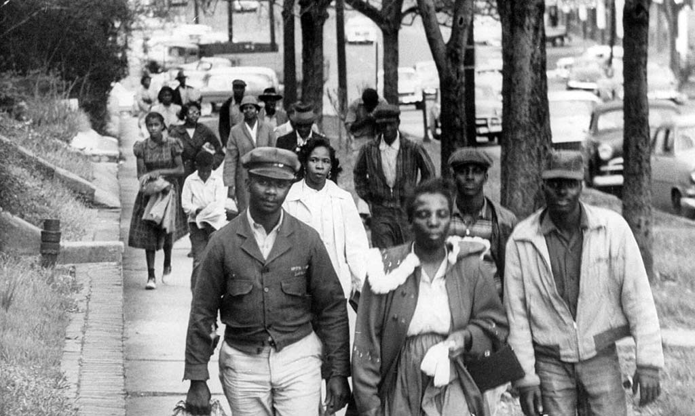

The civil rights movement was a struggle for social justice that took place in the 1950s and 1960s. The movement’s sole goal was to gain equal right for Black Americans. The whole movement was sparked by a simple event that took place on December 1, 1955 in Montgomery, Alabama. A 42-year-old woman named Rosa Parks was travelling home from work by a bus. The segregation laws at the time stated that black passengers were to be seated in the back of the bus. The Montgomery City Code required that all public transportation was to be segregated and that bus drivers had the "powers of a police officer of the city while in charge of any bus for the purposes of carrying out the provisions" of the code. While operating a bus, drivers were required to provide separate but equal accommodations for white and black passengers by assigning seats. When several white people got on the bus, they couldn’t find any available seats in the front part of the bus (were white people were instructed to sit). The white people were standing in the aisle; this was noticed by the bus driver. He had stopped the bus in order to remove the sign separating the two sections. The bus driver insisted that Parks and three other black passengers were to give up their seats. Parks strongly refused to give up her seat and therefore was arrested. The word of her unjust arrest was spread and lead to massive outrage and support. When Parks arrived at the courthouse for trial that morning with her attorney, Fred Gray, she was greeted by a bustling crowd of around 500 local supporters, who rooted her on. She later recalled that her refusal wasn’t due to the fact that she was physically tired, but due to the fact that she was tired of constantly giving in. Rosa unwittingly became “the mother of civil rights movement”. Her bravery led to a nationwide effort to end racial segregation.
Rosa’s act led to the Montgomery Bus Boycott, which ended in great success – it lasted for 381 days, it resulted in the Supreme Court declaring segregation on public transit systems to be unconstitutional. During the Montgomery Bus Boycott - the city's buses were, by and large, empty. Some people carpooled and others rode in African American-operated cabs, but most of the estimated 40,000 African American commuters living in the city at the time had opted to walk to work that day — some as far as 20 miles.
With the boycott's progress, however, came strong resistance. Some segregationists retaliated with violence. Black churches were burned, and both King and E.D. Nixon's homes were destroyed by bombings. Still, further attempts were made to end the boycott. The insurance was canceled for the city taxi system that was used by African Americans. Finally, in June 1956, the district court declared racial segregation laws (also known as "Jim Crow laws") unconstitutional. Black community leaders formed the Montgomery Improvement Association (MIA) led by Baptist minister Martin Luther King Jr.